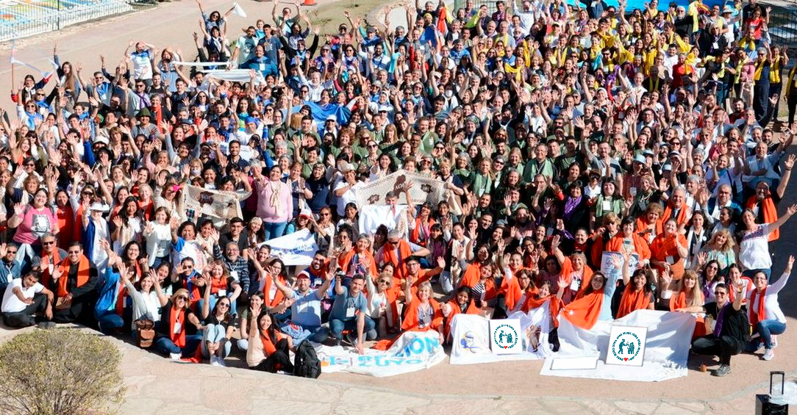
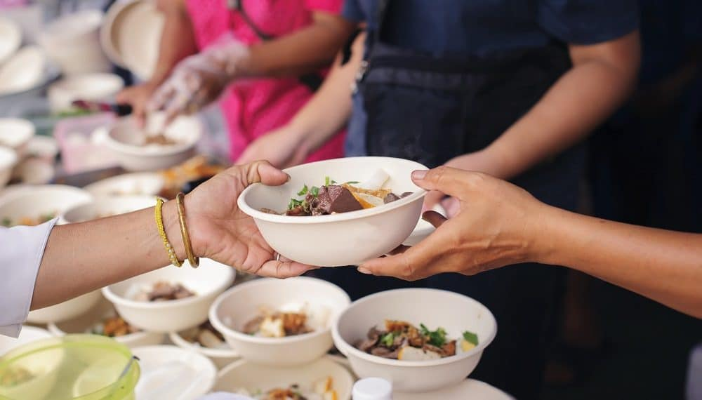

Quiénes Somos
La ONG Doña Marci Cuida nació de la experiencia de vida de su fundadora, Doña Marci, una mujer paraguaya que desde muy pequeña enfrentó grandes desafíos. A los 5 años fue separada de su familia y trabajó como sirvienta, viviendo una infancia marcada por la soledad y la responsabilidad prematura. Sin embargo, incluso en medio de la carencia, Marci nunca perdió su capacidad de compartir: cada vez que veía a alguien con hambre, ofrecía lo poco que tenía.
Al crecer y establecerse en Argentina, Marci encontró en su barrio humilde las mismas necesidades que había conocido desde niña. Con el deseo profundo de ayudar, comenzó con una olla solidaria en su casa. Ese gesto sencillo se transformó en un espacio comunitario que hoy brinda alimento, actividades y, sobre todo, contención emocional.
La ONG Doña Marci Cuida se consolidó gracias al esfuerzo colectivo de vecinos y voluntarios, convirtiéndose en un lugar de esperanza para niños, abuelos y familias enteras. Su misión es clara: ofrecer apoyo integral a quienes más lo necesitan, no solo con comida, sino también con escucha, cariño y oportunidades de integración.
Lo que empezó como un acto de solidaridad individual se convirtió en un proyecto social que cambia vidas. La historia de Doña Marci demuestra que la resiliencia y el amor al prójimo pueden transformar el dolor en ayuda, y que incluso los gestos más pequeños pueden crecer hasta convertirse en una organización que cuida y acompaña a toda una comunidad.

Misión, Visión y Valores
Misión
Brindar apoyo integral a niños, abuelos y familias en situación de vulnerabilidad
Visión
Ser un espacio de esperanza, resilencia y transformación comunitaria.
Valores
Solidaridad, compromiso y amor al prójimo como pilares de cada acción.
Qué hacemos
Comedores
Brindamos comidas diarias y acompañamiento a familias en situación de vulnerabilidad.
Ropero
Ofrecemos ropa y calzado a quines más lo necesitan, promoviendo la dignidad.
Apoyo Escolar
Acompñamos a niños y jóvenes en sus estudios, con clases y tallereses educativos.
